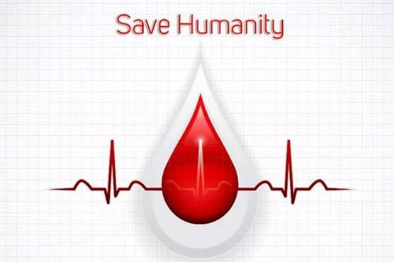

Voluntary blood donation programmes - recruitment and retention are about people and community, about understanding them, capturing their interest and influencing their behaviour. The main communicating task for both blood donor recruitment and retention should be geared towards getting public understanding about the importance and triggering a response for action. Once a blood donor motivator raises awareness, he or she must motivate and persuade people to donate blood. One key secret of successful blood donor recruitment is to take the beds to the donors as close as possible on their convenient date and time rather than expecting the donors to come to the blood bank. The closer the bed to the potential donor, the stronger is the likelihood of success. This is possible only through outdoor blood donation camps. If the camps are held in a relaxed manner, it can be an enjoyable pleasant experience for all concerned. All over the world, most blood from voluntary blood donors is collected from outdoor camps in rural and urban areas.
In Indian context camps can be organised on holidays or in the evening in residential area or locality based socio-cultural organisations not only in cities or towns, but also in suburbs and villages. The people of all ages assemble either on holidays or at the end of day’s or week’s work and the example of adults donating blood would be a strong teaching and demonstration effect for the children. Even diehard determined non-donors may be expected to donate blood someday if the camps become a regular activity in a particular venue. Camps can be organised in educational institutions, industrial and commercial houses throughout the week. Only all these combined efforts would ensure steady flow of blood in the blood banks. A few blood banks have well equipped mobile blood collection vans fitted with everything including beds, doctor’s chair, wash basin, storage refrigerator and even a small refreshment corner with own power generating unit. These vans are quite costly and cannot negotiate through the roads in suburban areas and villages and are not suitable for mass blood donation camps even in camps with 200 donors. Besides, festive mood of the environment and demonstration effect would not be there. So in Indian context, best method is outdoor camps by carrying blood bank personnel and equipment in a vehicle and pitching the camp in a prefixed well ventilated place.
The outdoor camps in India are and will be organised in places faraway from blood banks. So a checklist of blood collection equipment and instruments should be maintained and carefully checked before the departure of the vehicle from the blood bank. Most of the blood collection items cannot be organised locally. Any omission to carry even a small item may frustrate the noble effort of the donor organisers and the donors.

Advantages of collection of blood from camps: